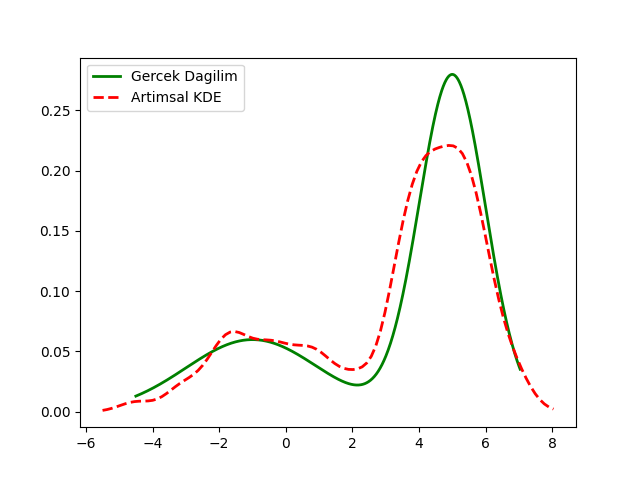

from scipy import stats
rand_seed = 100
def make_data_binormal(data_count=100):
alpha = 0.3
np.random.seed(rand_seed)
x = np.concatenate([
np.random.normal(-1, 2, int(data_count * alpha)),
np.random.normal(5, 1, int(data_count * (1 - alpha)))
])
dist = lambda z: alpha * stats.norm(-1, 2).pdf(z) + (1 - alpha) * stats.norm(5, 1).pdf(z)
return x, dist
data, d = make_data_binormal()from scipy.stats import norm
num_points = len(data)
total_density = None
total_samples = 0
h = 0.5
x_values = np.linspace(min(data) - 1, max(data) + 1, num_points)
current = data[0]
density = norm.pdf(x_values, loc=current, scale=h)
total_density = density
for i in range(len(data)):
current = data[i]
total_samples += 1
density = norm.pdf(x_values, loc=current, scale=h)
total_density = ((total_samples - 1) / total_samples) * total_density + \
(1 / total_samples) * density
x_vals = np.linspace(np.min(data), np.max(data), 1000)
plt.plot(x_vals, d(x_vals), color='green', lw=2, linestyle='-', label='Gercek Dagilim')
plt.plot(x_values, total_density, color='red', lw=2, linestyle='--', label='Artimsal KDE')
plt.legend()
plt.savefig('stat_176_app2inc_01.png')
[devam edecek]
Kaynaklar
[1] Bayramli, Istatistik, Parametresiz İstatistik (Nonparametric Statistics)
[2] Bayramli, Zaman Serileri, ARIMA, ARCH, GARCH, Periyotlar, Yürüyen Ortalama
[3] He, Jiang, An Incremental Kernel Density Estimator for Data Stream Computation